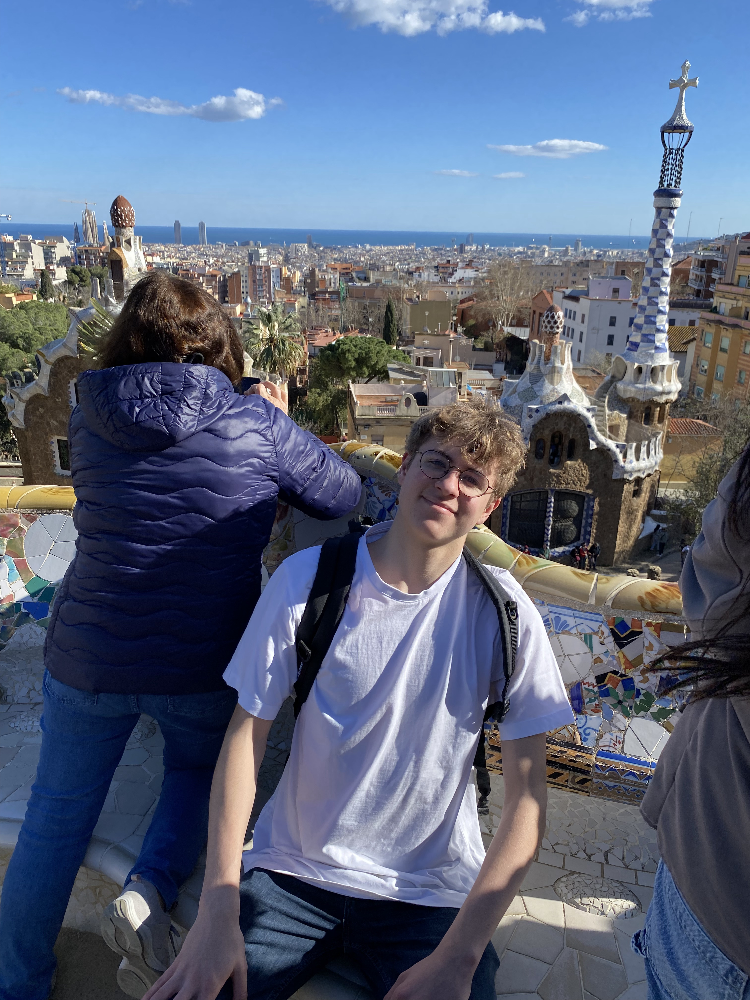

Parc Güel
Description :
Le Parc Güell est un parc public situé sur la colline d'El Carmel à Barcelone, en Espagne. Conçu par
l'architecte catalan Antoni Gaudí, c'est l'un des sites les plus emblématiques de la ville et un exemple
exceptionnel de l'architecture moderniste catalane.
Le parc a été initialement conçu comme une ville-jardin pour la haute société barcelonaise, mais le
projet n'a jamais été pleinement réalisé. Au lieu de cela, il a été transformé en un parc public en 1926 et est
depuis devenu l'une des attractions touristiques les plus populaires de Barcelone.
Le Parc Güell est célèbre pour son design fantaisiste et coloré, caractéristique du style distinctif
de Gaudí. Les principales attractions du parc comprennent la célèbre terrasse serpentante, ornée de mosaïques
colorées et de bancs en forme de dragon, ainsi que la salle Hypostyle, une série de colonnes inclinées qui
soutiennent la place centrale.
Le parc offre également une vue imprenable sur la ville de Barcelone et la mer Méditerranée, ce qui en
fait un lieu idéal pour se détendre et profiter de la beauté naturelle de la région. Les jardins luxuriants du
parc abritent une grande variété de plantes et de fleurs méditerranéennes, créant une atmosphère paisible et
relaxante pour les visiteurs.
Le Parc Güell est inscrit au patrimoine mondial de l'UNESCO depuis 1984 et attire des millions de
visiteurs du monde entier chaque année. C'est un lieu incontournable pour les amateurs d'architecture, d'art et de
nature, offrant une expérience unique qui capture l'esprit créatif et visionnaire d'Antoni Gaudí.
......
Nous sommes allés au parc Güell après avoir visité les différentes "casa" de Barcelone. J'ai trouvé ce parc très original et très agréable à observer. De plus, il a été conçu par l'architecte Gaudí, ce qui rend le parc encore plus spécial. J'ai beaucoup aimé les mini-jeux que l'on a faits là-bas.

